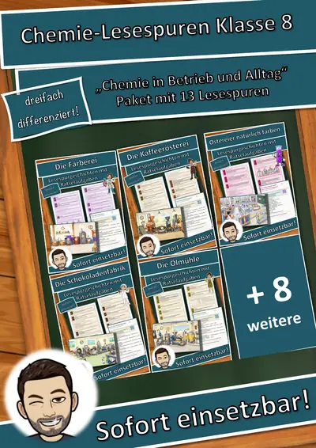

Lesespur: Die Zuckerfabrik – Lesespurgeschichte mit Rätseln (Klasse 8)
Mit dieser differenzierten Lesespurgeschichte erarbeiten die Lernenden selbstständig und motivierend den Weg der Zuckergewinnung – von der Zuckerrübe über Waschtrommel, Schneidmaschine, Extraktionsturm, Kalkläuterung, Verdampfer und Sudpfanne bis zur Zentrifuge. Lena und Jonas erkunden mit der Technikerin Frau Klar eine Zuckerfabrik.
So funktioniert die Lesespur: Die Lernenden lesen einen Abschnitt, entnehmen dem Hinweis einen Ort in der Fabrik, suchen ihn auf dem farbigen Fabrik-Plan und lesen dort weiter. An jeder richtigen Station sammeln sie einen Buchstaben. Vier Sackgassen (Honigwabe, Mehlmühle, Salzmine, Kartoffelacker) dienen der Selbstkontrolle und machen deutlich, dass dort andere Lebensmittel oder Rohstoffe gewonnen werden und nicht der Rübenzucker. Am Ende ergeben die gesammelten Buchstaben – nach dem Umstellen – ein geheimes Lösungswort, das die feste Form benennt, in der reiner Zucker am Ende entsteht.
Inhaltlich verbindet das Material die Zuckergewinnung mit wichtigen Trennverfahren der Chemie: Herauslösen (Extrahieren), Reinigen und Klären, Eindampfen sowie das Trennen mit der Zentrifuge – anschaulich, sachlich und altersgerecht.
Das ist enthalten:
- Lesespurgeschichte in drei Niveaus (leicht, mittel, schwer) – ideal zur Differenzierung
- farbiger Fabrik-Plan mit allen Stationen der Zuckergewinnung
- vier eingebettete Aufträge: Begriffe verbinden, Quiz, Rechenaufgabe, Steckbrief
- Hörverstehen mit QR-Code zum Hörtext (Teil A Ankreuzen, Teil B frei schreiben)
- Rätselseite (Wörter-Suchsel und Wissensquiz)
- Ausmalbild
- ausführliches Lösungsblatt mit Fundorten
- das komplette Material zusätzlich als drucksparende Schwarz-Weiß-Vorlage
Geförderte Kompetenzen: sinnentnehmendes und selektives Lesen, Anwenden von Lesestrategien, konzentriertes Zuhören sowie das fachliche Verständnis der Zuckergewinnung (Stoffgemische und Trennverfahren: Lösen, Filtern/Klären, Eindampfen, Kristallisieren).
Einsatz: Übungsphasen, Wochenplan, Stationenlernen, Vertretungsstunden, Freiarbeit und Nachhilfe. Umfang: 24 Seiten.
Ähnliche Materialien

Fabrik – Hörverstehen mit Lückentext (interaktiv)

Fabrik Lückentext mit Wortspeicher Hörverstehen und Suchsel

Lesespur: Roboter in der Fabrik: Automatisierung und Arbeit – Lesespurgeschichte mit Rätseln (Klasse 9)

Materialpaket Lesespurgeschichten Technik Klasse 8: 3 Lesespuren mit Rätselaufgaben, dreifach differenziert

Materialpaket Lesespurgeschichten Chemie Klasse 8 – Stoffe, Feuer und Arbeiten im Labor: 18 Lesespuren mit Rätselaufgaben, dreifach differenziert

Materialpaket Lesespurgeschichten Chemie Klasse 8 – Chemie in Betrieb und Alltag: 13 Lesespuren mit Rätselaufgaben, dreifach differenziert

Lesespur: Ostereier natürlich färben: Farbstoffe und Indikatoren – Lesespurgeschichte mit Rätseln (Klasse 8)